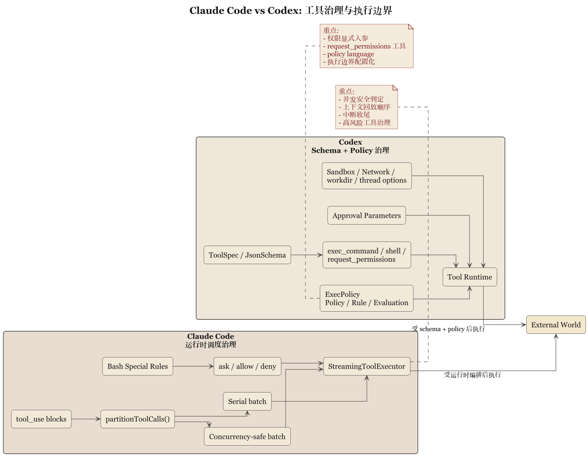

第 4 章 工具、沙箱与策略语言：谁来阻止模型动手太快

4.1 真正危险的是开始执行
一个模型说错话，通常只是浪费时间。一个模型执行错命令，就可能顺手把目录、仓库、进程和工作流一起带坏。所以真正把 AI coding system 区分开来的，是它调工具之前谁拥有最后解释权。
Claude Code 和 Codex 在这件事上都很认真，但认真得不一样。
Claude Code 更接近在运行时把工具纳入调度纪律。它有 toolOrchestration.ts、toolExecution.ts、StreamingToolExecutor.ts、useCanUseTool.tsx、Bash 专门 prompt 以及 allow/deny/ask 语义。它关心的是：这次工具调用能不能跑，怎么跑，能不能并发，用户有没有拒绝，跑到一半如何中断，结果怎么回到上下文。
Codex 则把工具本身先做成类型化接口。tools/src/lib.rs 导出一整套工具构造器，local_tool.rs 则定义 exec_command、shell、shell_command、request_permissions 等 schema 结构。工具在 Codex 里首先是规范化的 API 面，其次才是执行单元。
4.2 Claude Code：重点在运行时编排和危险动作约束
Claude Code 的工具系统有一种很强的现场调度感。并发要看 schema 和 isConcurrencySafe()；上下文修改要保证回放顺序稳定；流式工具执行还要考虑中断、synthetic result 和 UI 反馈。
这套系统最像工程现实的地方，是它承认工具调用是“一个带后果的过程”，而非单个点动作。从这一点看，Claude Code 的 harness 很像给模型装了一个工地监工。工人当然可以干活，但监工得盯着：
- 先做哪一个
- 哪些能并行
- 哪些必须串行
- 做完以后怎么记账
- 干到一半被叫停怎么办
尤其是 Bash 这类高风险工具，Claude Code 的态度简直可以说是唠叨。可工程里真正成熟的系统，通常都会对最危险的接口变得唠叨。谁还在 shell 面前保持一种青年式的洒脱，多半还没有足够多的事故记忆。
4.3 Codex：重点在工具 schema、审批参数和策略引擎
Codex 则更接近把“风险动作”的控制做成正式接口约束。
以 local_tool.rs 为例，exec_command 这类工具会显式拥有这些字段，而不是简单接收一个字符串命令：
cmdworkdirshellttyyield_time_msmax_output_tokenslogin- approval 相关参数
而 shell / shell_command 还会在描述层面直接要求设置 workdir，提醒不要滥用 cd。这说明 Codex 不满足于“后台自己做对”，它还希望把正确使用方式嵌进工具定义本身。
更进一步，Codex 把审批和权限提升抽成显式参数，把 request_permissions 做成单独工具，又把 execpolicy 单独做成 crate。这里的关键词已经超出简单的 permission，进入了更完整的策略层：
PolicyRuleEvaluationDecision- parser
这套命名几乎等于在说：执行边界已经形成一门小型政策语言，而不只是几个 if/else。
4.4 运行时审批对照策略语言
Claude Code 和 Codex 在工具风险控制上的分歧，可以概括为：
- Claude Code 偏运行时审批链
- Codex 偏显式策略语言与参数化审批
Claude Code 的 ask/allow/deny 逻辑，很适合与具体工具调用现场紧密耦合。系统可以根据当前上下文、工具类型、用户动作和会话状态来决定是否继续。它的长处是灵敏，缺点是规则更容易藏在 runtime 逻辑里。
Codex 的 exec policy 思路，则是尽量把规则抽离出来，让它成为可以单独解析、单独评估的实体。这种写法的长处，是规则可读性和可迁移性更强，也更适合团队级治理。缺点是系统会显得更重，而且你得认真维护 policy 设计，而不是把它当注释。
说得粗一点：
Claude Code 更接近“值班经理现场拍板”。
Codex 更接近“公司先写好制度，再看这单是否合规”。
4.5 沙箱与审批，不只是安全问题，也是产品定义问题
很多团队把沙箱、审批、权限看成安全附属件。这个看法有点轻慢。对于 coding agent 来说，这些东西其实定义了产品是什么。
假如系统允许模型直接在用户目录里跑任意命令，那它就成了一个把风险转嫁给用户的 agent，而不只是“更强”。反过来，如果系统能明确表达 sandbox mode、network access、approval policy、additional directories、state DB 位置和 MCP tool approvals，那它给用户提供的就不只是能力，还有行为边界。
Codex 在 thread.ts 里把这些 turn 级条件显式暴露出来，说明它把这些东西视为线程运行语义的一部分，而不是隐藏实现细节。Claude Code 则在工具执行、中断、permission hook 与 Bash 限制里，把边界压到运行时现场去执行。
这意味着二者在产品哲学上也不一样：
- Claude Code 更接近“边做边看守”
- Codex 更接近“先给出执行契约，再开始做”
4.6 MCP、扩展工具与边界外移
两套系统都支持把更多能力接进来，但方式仍然保留差异。
Claude Code 更接近把 skill、hook、permission 和工具 prompt 拼接成一套场景化治理链。它擅长让本地规则跟着任务现场进入主循环。
Codex 则更愿意把外部能力纳入统一工具系统。tools/src/lib.rs 中 MCP resource、dynamic tool、tool discovery 等接口，说明外部扩展最好也成为 schema 化、公理化的工具对象，而不是运行时临时约定。
这是很关键的分歧。因为一旦生态变大，系统会越来越依赖“扩展能力如何服从总规则”。谁先把边界外移问题想清楚，谁的扩展体系以后就更不容易变成杂物间。
4.7 本章结论
这一章可以压缩成一句比较硬的判断：
Claude Code 的工具治理更强地依赖运行时编排与现场审批，Codex 的工具治理更强地依赖 schema、参数化权限和独立策略系统。
前者像经验丰富的工头。
后者像有制度处和法务部的施工单位。
你要是只看“都能跑命令”，就会错过真正重要的差异。重要的是，谁在工具动手之前拥有最终秩序。
下一章看更接地气的一层：skills、hooks、本地规则文件和团队制度。技术系统一旦要进团队，最后都得学会写村规民约。